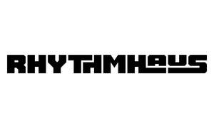

Trade Mark Journal No.2025/043 24 October 2025
UK00004277840 14 October 2025 (9,16,25,38,41)

- Class 9
- Downloadable digital music, audio and video recordings; downloadable podcasts; downloadable sound, music and multimedia files; downloadable DJ mixes; downloadable image files; downloadable mobile applications for accessing radio, podcasts, playlists and event information; computer software for streaming, broadcasting, recording and editing audio; downloadable electronic publications, magazines and newsletters relating to music, entertainment and culture; magnetic, optical and digital data carriers containing music or audiovisual content; pre-recorded CDs, vinyl records, DVDs and USB drives featuring music or audiovisual works; downloadable software for community networking and music sharing.
- Class 16
- Printed matter; printed publications; books; magazines; brochures; pamphlets; catalogues; newsletters; programmes; booklets; periodicals; event tickets; posters; flyers; prints; art prints; photographs; postcards; greeting cards; stationery; notebooks; diaries; envelopes; writing paper; stickers; decals; transfers; banners of paper; paper banners; display banners made of paper; display banners made of cardboard; calendars; business cards; instructional and teaching materials (except apparatus); paper bags; plastic bags; packaging materials of paper, cardboard or plastic; advertising and promotional materials made of paper or cardboard; record sleeves; CD and vinyl covers; paper labels; merchandise tags; printed signs and display materials; coasters and beer mats of paper or cardboard.
- Class 25
- Clothing; footwear; headgear; T-shirts; shirts; sweatshirts; hoodies; jackets; coats; trousers; jeans; shorts; skirts; dresses; tracksuits; jumpers; cardigans; underwear; socks; hosiery; gloves; scarves; belts; caps; hats; beanies; visors; shoes; trainers; boots; sandals; slippers; dancewear; stage costumes; outerwear; promotional apparel; casualwear; loungewear; swimwear; sportswear; performance wear; rainwear; uniforms; aprons; wristbands; headbands; bandanas; pyjamas; sleepwear; baby clothes.
- Class 38
- Radio broadcasting; internet radio broadcasting; podcast streaming services; music broadcasting; broadcasting of audio, video and multimedia content via the internet and other communications networks; webcasting and simulcasting services; electronic transmission and streaming of digital music, sound and video recordings; transmission of podcasts, radio programmes, DJ mixes and live performances online; transmission of sound, data and images; providing access to digital music, radio, and online databases; providing access to web portals; providing online chatrooms, forums and community platforms for social interaction relating to music, entertainment and cultural topics.
- Class 41
- Entertainment services; production, presentation and distribution of radio shows, podcasts and music programmes; organisation, promotion and hosting of musical events, concerts, club nights, festivals and live performances; arranging and conducting DJ sets, live shows and public entertainment; production of audio and video recordings; music publishing; providing online and non-downloadable digital music, radio programmes and podcasts; education and training in DJing, music production and performance; publication of blogs, magazines and newsletters relating to music and entertainment; provision of information relating to music, cultural and community events via websites and social media; curation of playlists and audio content; artist development and promotion; community engagement and cultural outreach projects.
RHYTHMHAUS MUSIC LTD